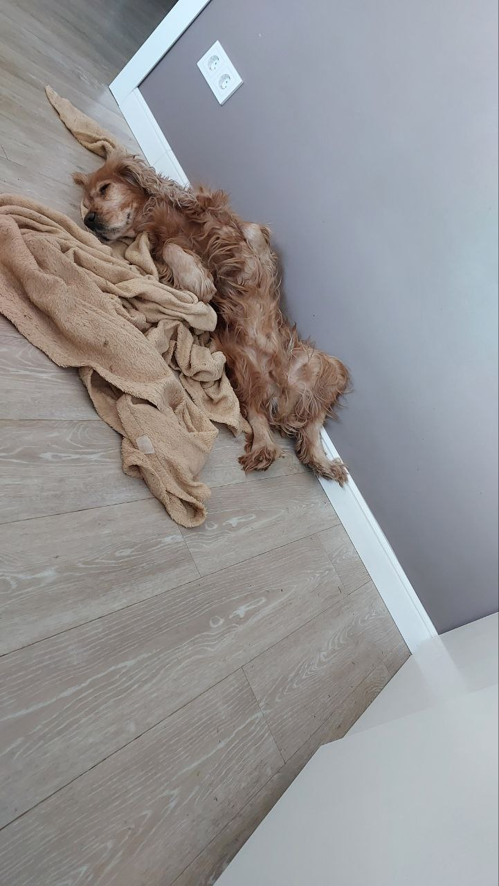

Один кудрявый день

По ул. Чебурашкино 53 живёёт кудрявая морда по кличке Спок. Не смотря на покрытый шерстью пол, из которого хоть
свитер вяжи, хоть на свитерах мы и не зарабатываем, мы всё равно его безумно любим.
Его день:
- В 8 утра разбрасывает шерскть по квартире
- В 9 утра нюхает любимые кусты
- В 10 утра жуёт любимые коричневые камушки
- В 11 утра мечтает
- С 12 до 14 часов он эксперементирует с позами для сна
- С 15 до 17 часов требует королевского внимания
- В 18 часов грустит, глядя в зеркало коридорной двери
- В 19 вечера занимается разметкой территорий
- В 20 часов дегустирует новые вкусы
- В 21 вечера исследует новые уголки
- В 22 часа греет любимое одеялко
- Ночью преследует добычу во сне аке охотничий пёс
Радости собарьей жизни

Жизнь Спока состоит целиком из удовольствий. Ну, кроме тех моментов, когда нужно идти к ветеринару... Ну, или
когда человек не кидает игрушку. А так, в общем-то, сплошь радость да веселье.
Что любит Спок:
- Таню, прекрасную и ужасную
- Кушать
- Гулять
- Бегать за верёвочкой
- Прятать свои сокровища
- Почёсывания пузика
- Быть в центре внимания
- Лежать на человеческом белье
Немного об английских кокер-спаниелях